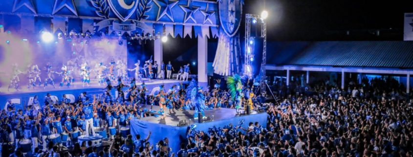

Praça da catedral de Nossa Senhora Do Carmo
Ponto central de encontro dos visitantes que vão à Ilha Tupinambarana no período da grande festa de Caprichoso e Garantido.

Curral Zeca Xibelão
Espaço físico do Boi Caprichoso, localizado no centro de Parintins, no Amazonas. É um local de ensaios, apresentações, festas e outras tradições do bumbá.
Curral Lindofo Monteverde
Área do boi Garantido no Festival Folclórico de Parintins. O complexo abriga a sede do boi, com galpões, diretoria, curral e outras áreas administrativas.